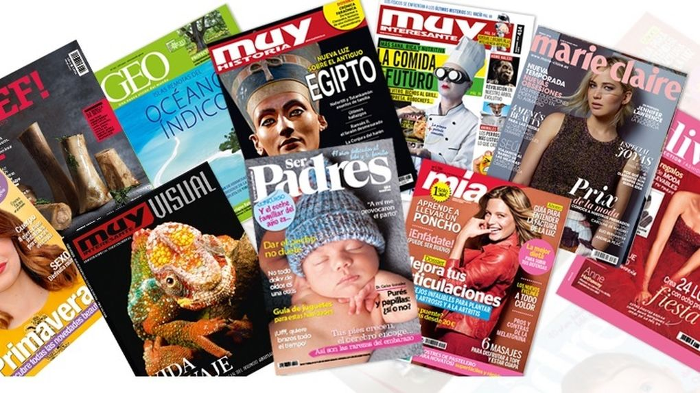
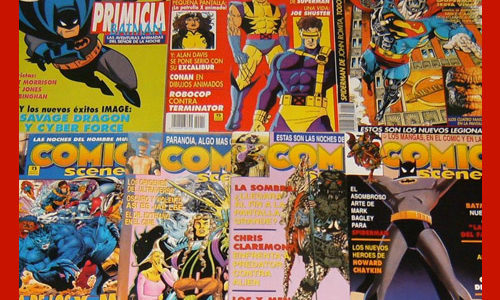

INTRODUCCION
¿Que es el cómic?.-Es un medio visual de narración verbo-icónica que comunica historias de uno o varios personajes. Se trata de una “narración secuencial mediante imágenes fijas” (Castillo, 2004: 248). Es decir, mediante una sucesión de imágenes (compuestas por caricaturas dibujadas) que se complementan con textos. Es un producto cultural que busca persuadir a grandes públicos y posee sus códigos propios. El cómic o historieta (nombre que se le da en México) es un producto sociolingüístico. La historieta es un sistema semiótico, que tiene una denotación (habla e imagen) y una connotación. La función ideológica de este medio ha sido poco analizada, pero el trabajo hasta ahora nos permite afirmar que el cómic es un aparato ideológico.
Revistas.- Es una publicación privada o pública de edición habitual, acerca de un tema en especial o de distintos temas de interés general o de entretenimiento y que por lo general vienen ilustradas. Casi todas las revistas cuentan con publicidad, que les permite costear los gastos de producción. Las revistas se comercializan, mientras que existen otras que son distribuidas gratuitamente.
Revistas.- Es una publicación privada o pública de edición habitual, acerca de un tema en especial o de distintos temas de interés general o de entretenimiento y que por lo general vienen ilustradas. Casi todas las revistas cuentan con publicidad, que les permite costear los gastos de producción. Las revistas se comercializan, mientras que existen otras que son distribuidas gratuitamente.

HORARIOS:
Lunes a Jueves:
10 de la mañana a 9 de la noche.
Viernes Y Domingo:
11 de la mañana a 11 de la noche.
Sabado:
CERRADO(solo compras por internet)
Lunes a Jueves:
10 de la mañana a 9 de la noche.
Viernes Y Domingo:
11 de la mañana a 11 de la noche.
Sabado:
CERRADO(solo compras por internet)
